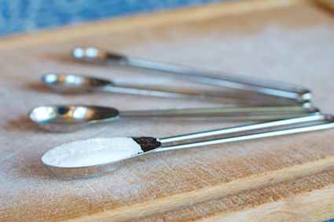
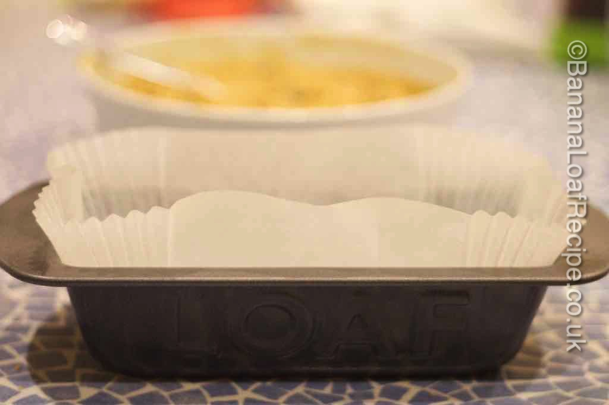
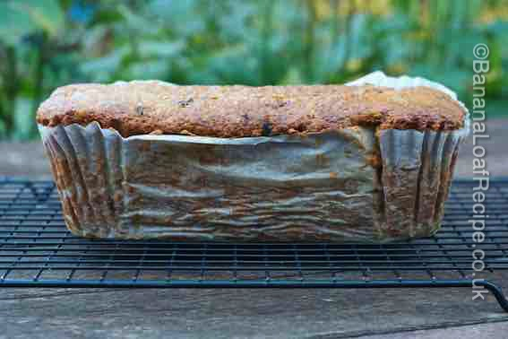

How to bake the perfect loaf cake - 12 tips for success
It’s always nerve-wracking baking a cake. You put all the effort in and then have to wait for what seems like an age only to find that your cake looks no bigger than it did when it went in and has burnt on top. What disappointment!
Here is our guide to help you bake your loaf cake successfully. Why not follow our step-by-step recipe for banana loaf cake after you have read this. With images to help you along the way, you'll have a enjoyable baking experience and a tasty result. It's the best banana loaf recipe out there!
1. Pre-heat the Oven
Pre-heat your oven so that it is ready to bake when you have finished preparing the mixture. It's not a bad idea to invest in an oven thermometer to check that your oven is functioning at the correct temperature.
2. Use Fresh Ingredients
Use the freshest ingredients possible - especially when it comes to anything that helps with the rise such as baking powder and eggs. Baking powder, especially, really does deteriorate with age so once it’s been open a couple of months it may not work as well

3. Stick to the Recipe
Use the ingredient quantities listed, at least when it comes to the key baking ingredients like flour, fat and eggs. Follow instructions for ingredient temperatures - eggs, for example, should normally be at room temperature. Baking is a bit of a science as well as an art - missing out a key ingredient like baking powder WILL affect the results!
4. Use the Correct-Sized Tin
We use a 2lb (900g) tin for this banana loaf recipe. If you don't have one, see our loaf tin review if you want to buy one. If you really need to use a different tin size, make sure you read our article Baking your loaf in a different cake tin size for more information about how to do it succesfully.

5. Line the Tin
Line your tin so that the the loaf cake comes out easily, even if you are using non-stick bakeware. Cut and fold baking parchment or see our loaf tin liner review to read about pre-cut loaf tin liners. If you have a baking parchment crisis, you can grease the tin but it will leave grease on your cake so use softened butter to do this so as not to introduce an unwanted flavour.
6. Put your Cake in the Oven Carefully
Handle your filled loaf tin as if it were fragile goods. Place the loaf cake in the middle of the oven - you want to get as even a heat distribution as possible. Gently close the oven door - a slammed door could cause air to escape from the mixture and lead to less rise in your cake.
7. Use an oven timer
It sounds obvious but it’s easy to forget with the relief of getting the cake in the oven! Set the oven for 5-10 minutes before you expect your loaf cake to be ready so that you can catch it if it is overcooking. Ovens do vary enormously so when you make a loaf cake recipe, such as our banana loaf recipe, for the first time you have to take account of this.

8. No Peaking!
Don’t open the oven door for peaks during the baking time, particularly in the early stages - you will let the heat out and may cause the loaf cake to sink.
9. Test with a Skewer
If the timer has gone off and the loaf cake looks risen and golden, take it carefully out of the oven with oven gloves and put it gently on a heatproof surface (don’t bang it). Insert a skewer into the middle of the cake. If it comes out clean, the cake is cooked. If the skewer brings out batter on it, the cake is not cooked and you need to put it back in the oven.
10. Protect an Over-cooking Top
If your loaf cake is beginnig to look brown on top but the skewer still has batter on it, you can put some greaseproof paper over the top to protect it while it finishes cooking.

11. Put the Loaf Cake Back If You Need To
If you are putting the cake back, do so using an oven timer for 5 minute intervals, carefully testing in between until the cake is cooked.
12. Cool the Loaf Cake Properly
Allow the cake to cool on a wire cooling rack. If you leave it in the tin for too long or put it to cool on a solid surface, moisture will condense underneath your cake and your loaf cake's bottom will go soggy. See our wire cooling rack review if you need to buy one. Wait for a bit before peeling off the paper - it will be easier if the cake is slightly cooler.